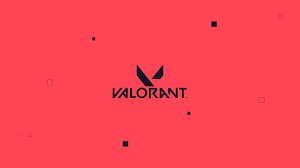

SACY
Gustavo "Sacy" Rossi
Gustavo "Sacy" Rossi


Gustavo “Sacy” Rossi, nascido em 2 de dezembro de 1997, consolidou-se
como uma das figuras mais lendárias e influentes da história dos
esportes eletrônicos no Brasil . Sua trajetória é marcada por uma
versatilidade rara, tendo iniciado no Counter-Strike aos 11 anos antes
de se tornar campeão brasileiro de League of Legends in 2017 e,
posteriormente, atingir o topo global no VALORANT . Sacy detém um feito
único no mundo: ele é o único jogador a conquistar tanto um título de
Champions (2022) quanto um de Masters (2024), o que o elevou ao status
de "Fallen do VALORANT" devido à sua liderança estratégica e capacidade
de formar novos talentos .
Após quatro anos de domínio absoluto no FPS da Riot Games, Sacy anunciou
sua aposentadoria dos palcos profissionais em setembro de 2024, buscando
aliviar o peso da rotina exaustiva e da pressão competitiva que
enfrentava morando no exterior . Desde então, ele retornou ao Brasil e
assumiu um papel central como criador de conteúdo e embaixador do MIBR .
Atualmente, ele mantém uma presença ativa na comunidade através de watch
parties de grandes torneios, onde oferece análises técnicas e
entretenimento para milhares de torcedores, além de comandar o programa
de debates “Chutando o Bald” . Embora tenha expressado em entrevistas o
desejo de talvez atuar como treinador no futuro, ele vinha priorizando
sua saúde mental e projetos pessoais fora do servidor .
No entanto, in 2026, o cenário de eSports foi impactado pelo anúncio de
seu retorno temporário à competição . Sacy aceitou o desafio de liderar
a seleção brasileira na Esports Nations Cup 2026, torneio tratado como a
"Copa do Mundo" da modalidade, onde se reuniu novamente com o trio
histórico do título mundial de 2022, ao lado de aspas e Less . No âmbito
pessoal, Gustavo enfrentou um momento de profunda superação em abril de
2026 devido ao falecimento de seu irmão caçula, um evento que gerou
grande comoção e apoio de toda a comunidade global de eSports . Hoje,
Sacy equilibra sua vida entre a produção de conteúdo de alto nível e a
responsabilidade de guiar a próxima geração de jogadores brasileiros
rumo a mais um título internacional .
